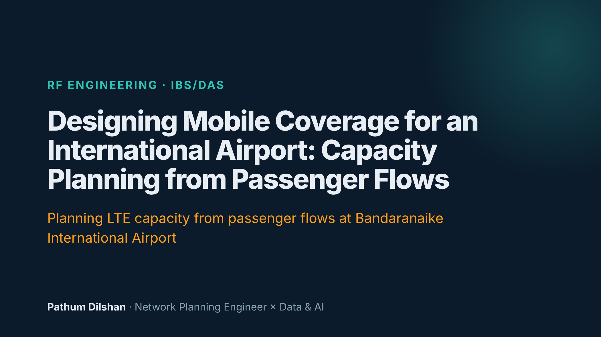

Designing Mobile Coverage for an International Airport: Capacity Planning from Passenger Flows
How I approach LTE in-building (IBS/DAS) design at Bandaranaike International Airport, and why airports break normal radio planning rules

An airport is the worst place to guess.
Thousands of people land at once, switch their phones off flight mode, and try to message family, book a taxi and upload photos in the same few minutes. If the network can't take that surge, the first impression a visitor gets of the country is "No Service".
At Mobitel I work on capacity planning and IBS/DAS design for Bandaranaike International Airport (BIA), Katunayake. BIA handled about 10.2 million passenger movements in 2025 and about 4.75 million in the first half of 2026 (Daily FT). Here is the method I use, and what makes airports different from almost any other site.
1. Plan for the peak hour, not the average day
Ten million passengers a year sounds like 28,000 a day. That number is useless for radio design. Airport traffic arrives in waves set by the flight schedule, so the real question is: how many active users are inside a given zone during its busiest 15 to 60 minutes?
I build that from three inputs:
- The flight schedule by hour and terminal zone (arrivals, departures, transit).
- Aircraft size, which turns flights into passengers per wave.
- Dwell time per zone: minutes spent at immigration, baggage claim, gates and lounges.
A worked example (illustrative numbers, not BIA's actual design figures):
| Input | Value |
|---|---|
| Wide-body arrivals landing within 30 minutes | 3 |
| Passengers per flight | 300 |
| People in baggage claim at the peak | ~900 |
| Share with an active data session | 40% |
| Active users to serve in that zone | ~360 |
That single zone can need more capacity than a whole suburban cell site. A busy hall can also be quiet ten minutes later, so capacity has to move with the crowd.
2. Split the building into capacity zones
An airport isn't one cell. I divide it into zones that behave differently:
- Arrivals, immigration and baggage claim: short, intense surges right after landings.
- Departure gates and lounges: long dwell times and heavy video and social media use.
- Check-in halls and kerbside: mixed crowds of passengers and the people seeing them off.
- Back-of-house areas: staff, operations and IoT devices with steady, low traffic.
Each zone gets its own sector or cell group, so a surge at arrivals doesn't starve the gates.
3. Choose bands and MIMO by role
Different LTE layers do different jobs:
- L1800 is the coverage layer that keeps every device connected.
- L2100 and L2600 are the capacity layers, carrying most of the traffic in dense zones.
- MIMO configuration (2T2R, 4T4R, 8T8R) depends on zone density and how many streams the DAS can carry. More antenna paths mean more throughput per sector, but also more cost and more complex installation.
The skill is matching configuration to the zone. 8T8R in a back-office corridor is wasted money; 2T2R at a crowded gate cluster is a complaint waiting to happen.
4. Control the boundary with the outdoor network
The hardest part of in-building design is often the edge. Outdoor macro cells leak into terminals through glass walls, and indoor cells leak out onto aprons and car parks. Without careful planning, phones ping-pong between indoor and outdoor cells and calls drop at the doors.
What helps:
- Design the indoor system to dominate inside the building, with a clear signal margin over the outdoor cells.
- Plan neighbour relations and handover parameters for the entrances, where people actually cross over.
- Walk-test the transitions, not just the open halls.
5. Optimisation never ends
Flight schedules change every season. New airlines arrive, terminals expand and passenger habits shift towards more video. Airport IBS is a living system. I track KPIs by zone and by hour, especially accessibility, drop rate, throughput per user and PRB utilisation, and adjust capacity before users feel the congestion.
What I'd tell any RF engineer starting on a venue like this
- Start from people, not square metres. Passenger flow is the real input.
- Design for the peak 15 minutes, and know which zone it happens in.
- Treat the indoor–outdoor boundary as its own design problem.
- Build monitoring in from day one. A venue changes faster than a city.
Airports show that radio planning is really demand planning. The physics matters, but the passengers write the requirements.
Pathum Dilshan is an Engineer – Network Planning & Optimization at Mobitel, Sri Lanka, and an MSc Data Science & AI student at the University of Moratuwa. He writes about telecom, data and AI. Connect on LinkedIn or visit pmpdilshan.github.io.